Data Visualisation
👨💻 Eugene Hickey @ Atlantic Technological University 👨💻
- eugene.hickey@tudublin.ie
- @eugene100hickey
- github.com/eugene100hickey
- www.fizzics.ie
Graphics Key Feature of R
Graphics are important, overlooked, and inconsistent
- the last mile of data analysis
Need to tell a story
Can be misleading, almost always by accident
Choice of colours / fonts
Keep it simple - reduce amount of ink
Increasing number of options for showcasing your data
Kernel of graphics in R is ggplot
ggplotis easy to make publication-readyeasier to make sequence of visualisations
fits in nicely with the rest of the tidyverse
Lots of addin packages for ggplot
gg.gap, ggalignment, ggallin, ggalluvial, ggalt, ggamma, gganimate, ggarchery, ggasym, ggbeeswarm, ggblanket, ggborderline, ggbrain, ggbreak, ggBubbles, ggbuildr, ggbump, ggchangepoint, ggcharts, ggChernoff, ggcleveland, ggcorrplot, ggcorset, ggcoverage, ggdag, ggdark, ggDCA, ggdemetra, ggdendro, ggdensity, ggdist, ggdmc, ggDoE, ggDoubleHeat, gge, ggeasy, ggedit, ggeffects, ggenealogy, ggESDA, ggetho, ggExtra, ggfan, ggfittext, ggfocus, ggforce, ggformula, ggfortify, ggfun, ggfx, gggap, gggenes, ggghost, gggibbous, gggrid, ggh4x, gghalfnorm, gghalves, gghdr, ggheatmap, gghighlight, gghilbertstrings, ggHoriPlot, ggimage, ggimg, gginference, gginnards, ggip, ggiraph, ggiraphExtra, ggisotonic, ggjoy, gglasso, gglgbtq, gglm, gglorenz, ggm, ggmap, ggmapinset, ggmatplot, ggmcmc, ggmice, ggmix, ggmosaic, ggmotif, ggmr, ggmuller, ggmulti, ggnetwork, ggnewscale, ggnormalviolin, ggnuplot, ggOceanMaps, ggokabeito, ggpackets, ggpage, ggparallel, ggparliament, ggparty, ggpath, ggpattern, ggpcp, ggperiodic, ggpie, ggplate, ggplot.multistats, ggplot2, ggplot2movies, ggplotAssist, ggplotgui, ggplotify, ggplotlyExtra, ggpmisc, ggPMX, ggpointdensity, ggpointless, ggpol, ggpolar, ggpolypath, ggpp, ggprism, ggpubr, ggpval, ggQC, ggQQunif, ggquickeda, ggquiver, ggrain, ggRandomForests, ggraph, ggraptR, ggrasp, ggrastr, ggredist, ggrepel, ggResidpanel, ggridges, ggrisk, ggroups, ggsci, ggseas, ggsector, ggseg, ggseg3d, ggseqlogo, ggseqplot, ggshadow, ggside, ggsignif, ggsn, ggsoccer, ggsolvencyii, ggsom, ggspatial, ggspectra, ggstance, ggstar, ggstats, ggstatsplot, ggstream, ggstudent, ggsurvey, ggsurvfit, ggswissmaps, ggtea, ggtern, ggtext, ggThemeAssist, ggthemes, ggtikz, ggTimeSeries, ggtrace, ggtrendline, ggupset, ggvenn, ggVennDiagram, ggversa, ggvis, ggvoronoi, ggwordcloud, ggx
Basic Picture of ggplot
Three Features of a Plot
- aesthetics
- values that each individual observation (row) has
- will be different for each observation
- attributes
- values that are shared between all points
- decide to make everything mint green
- layers
- each visualisation is built sequentially
- add features in layers, one on top of the last
- examples: add a plot title, change an axis scale….
ggplot Runthrough
species island bill_len bill_dep flipper_len body_mass sex year
1 Adelie Torgersen 39.1 18.7 181 3750 male 2007
2 Adelie Torgersen 39.5 17.4 186 3800 female 2007
3 Adelie Torgersen 40.3 18.0 195 3250 female 2007
4 Adelie Torgersen 36.7 19.3 193 3450 female 2007
5 Adelie Torgersen 39.3 20.6 190 3650 male 2007
6 Adelie Torgersen 38.9 17.8 181 3625 female 2007
7 Adelie Torgersen 39.2 19.6 195 4675 male 2007
8 Adelie Torgersen 41.1 17.6 182 3200 female 2007
9 Adelie Torgersen 38.6 21.2 191 3800 male 2007
10 Adelie Torgersen 34.6 21.1 198 4400 male 2007
11 Adelie Torgersen 36.6 17.8 185 3700 female 2007
12 Adelie Torgersen 38.7 19.0 195 3450 female 2007
13 Adelie Torgersen 42.5 20.7 197 4500 male 2007
14 Adelie Torgersen 34.4 18.4 184 3325 female 2007
15 Adelie Torgersen 46.0 21.5 194 4200 male 2007
16 Adelie Biscoe 37.8 18.3 174 3400 female 2007
17 Adelie Biscoe 37.7 18.7 180 3600 male 2007
18 Adelie Biscoe 35.9 19.2 189 3800 female 2007
19 Adelie Biscoe 38.2 18.1 185 3950 male 2007
20 Adelie Biscoe 38.8 17.2 180 3800 male 2007
21 Adelie Biscoe 35.3 18.9 187 3800 female 2007
22 Adelie Biscoe 40.6 18.6 183 3550 male 2007
23 Adelie Biscoe 40.5 17.9 187 3200 female 2007
24 Adelie Biscoe 37.9 18.6 172 3150 female 2007
25 Adelie Biscoe 40.5 18.9 180 3950 male 2007
26 Adelie Dream 39.5 16.7 178 3250 female 2007
27 Adelie Dream 37.2 18.1 178 3900 male 2007
28 Adelie Dream 39.5 17.8 188 3300 female 2007
29 Adelie Dream 40.9 18.9 184 3900 male 2007
30 Adelie Dream 36.4 17.0 195 3325 female 2007
31 Adelie Dream 39.2 21.1 196 4150 male 2007
32 Adelie Dream 38.8 20.0 190 3950 male 2007
33 Adelie Dream 42.2 18.5 180 3550 female 2007
34 Adelie Dream 37.6 19.3 181 3300 female 2007
35 Adelie Dream 39.8 19.1 184 4650 male 2007
36 Adelie Dream 36.5 18.0 182 3150 female 2007
37 Adelie Dream 40.8 18.4 195 3900 male 2007
38 Adelie Dream 36.0 18.5 186 3100 female 2007
39 Adelie Dream 44.1 19.7 196 4400 male 2007
40 Adelie Dream 37.0 16.9 185 3000 female 2007
41 Adelie Dream 39.6 18.8 190 4600 male 2007
42 Adelie Dream 41.1 19.0 182 3425 male 2007
43 Adelie Dream 36.0 17.9 190 3450 female 2007
44 Adelie Dream 42.3 21.2 191 4150 male 2007
45 Adelie Biscoe 39.6 17.7 186 3500 female 2008
46 Adelie Biscoe 40.1 18.9 188 4300 male 2008
47 Adelie Biscoe 35.0 17.9 190 3450 female 2008
48 Adelie Biscoe 42.0 19.5 200 4050 male 2008
49 Adelie Biscoe 34.5 18.1 187 2900 female 2008
50 Adelie Biscoe 41.4 18.6 191 3700 male 2008
51 Adelie Biscoe 39.0 17.5 186 3550 female 2008
52 Adelie Biscoe 40.6 18.8 193 3800 male 2008
53 Adelie Biscoe 36.5 16.6 181 2850 female 2008
54 Adelie Biscoe 37.6 19.1 194 3750 male 2008
55 Adelie Biscoe 35.7 16.9 185 3150 female 2008
56 Adelie Biscoe 41.3 21.1 195 4400 male 2008
57 Adelie Biscoe 37.6 17.0 185 3600 female 2008
58 Adelie Biscoe 41.1 18.2 192 4050 male 2008
59 Adelie Biscoe 36.4 17.1 184 2850 female 2008
60 Adelie Biscoe 41.6 18.0 192 3950 male 2008
61 Adelie Biscoe 35.5 16.2 195 3350 female 2008
62 Adelie Biscoe 41.1 19.1 188 4100 male 2008
63 Adelie Torgersen 35.9 16.6 190 3050 female 2008
64 Adelie Torgersen 41.8 19.4 198 4450 male 2008
65 Adelie Torgersen 33.5 19.0 190 3600 female 2008
66 Adelie Torgersen 39.7 18.4 190 3900 male 2008
67 Adelie Torgersen 39.6 17.2 196 3550 female 2008
68 Adelie Torgersen 45.8 18.9 197 4150 male 2008
69 Adelie Torgersen 35.5 17.5 190 3700 female 2008
70 Adelie Torgersen 42.8 18.5 195 4250 male 2008
71 Adelie Torgersen 40.9 16.8 191 3700 female 2008
72 Adelie Torgersen 37.2 19.4 184 3900 male 2008
73 Adelie Torgersen 36.2 16.1 187 3550 female 2008
74 Adelie Torgersen 42.1 19.1 195 4000 male 2008
75 Adelie Torgersen 34.6 17.2 189 3200 female 2008
76 Adelie Torgersen 42.9 17.6 196 4700 male 2008
77 Adelie Torgersen 36.7 18.8 187 3800 female 2008
78 Adelie Torgersen 35.1 19.4 193 4200 male 2008
79 Adelie Dream 37.3 17.8 191 3350 female 2008
80 Adelie Dream 41.3 20.3 194 3550 male 2008
81 Adelie Dream 36.3 19.5 190 3800 male 2008
82 Adelie Dream 36.9 18.6 189 3500 female 2008
83 Adelie Dream 38.3 19.2 189 3950 male 2008
84 Adelie Dream 38.9 18.8 190 3600 female 2008
85 Adelie Dream 35.7 18.0 202 3550 female 2008
86 Adelie Dream 41.1 18.1 205 4300 male 2008
87 Adelie Dream 34.0 17.1 185 3400 female 2008
88 Adelie Dream 39.6 18.1 186 4450 male 2008
89 Adelie Dream 36.2 17.3 187 3300 female 2008
90 Adelie Dream 40.8 18.9 208 4300 male 2008
91 Adelie Dream 38.1 18.6 190 3700 female 2008
92 Adelie Dream 40.3 18.5 196 4350 male 2008
93 Adelie Dream 33.1 16.1 178 2900 female 2008
94 Adelie Dream 43.2 18.5 192 4100 male 2008
95 Adelie Biscoe 35.0 17.9 192 3725 female 2009
96 Adelie Biscoe 41.0 20.0 203 4725 male 2009
97 Adelie Biscoe 37.7 16.0 183 3075 female 2009
98 Adelie Biscoe 37.8 20.0 190 4250 male 2009
99 Adelie Biscoe 37.9 18.6 193 2925 female 2009
100 Adelie Biscoe 39.7 18.9 184 3550 male 2009
101 Adelie Biscoe 38.6 17.2 199 3750 female 2009
102 Adelie Biscoe 38.2 20.0 190 3900 male 2009
103 Adelie Biscoe 38.1 17.0 181 3175 female 2009
104 Adelie Biscoe 43.2 19.0 197 4775 male 2009
105 Adelie Biscoe 38.1 16.5 198 3825 female 2009
106 Adelie Biscoe 45.6 20.3 191 4600 male 2009
107 Adelie Biscoe 39.7 17.7 193 3200 female 2009
108 Adelie Biscoe 42.2 19.5 197 4275 male 2009
109 Adelie Biscoe 39.6 20.7 191 3900 female 2009
110 Adelie Biscoe 42.7 18.3 196 4075 male 2009
111 Adelie Torgersen 38.6 17.0 188 2900 female 2009
112 Adelie Torgersen 37.3 20.5 199 3775 male 2009
113 Adelie Torgersen 35.7 17.0 189 3350 female 2009
114 Adelie Torgersen 41.1 18.6 189 3325 male 2009
115 Adelie Torgersen 36.2 17.2 187 3150 female 2009
116 Adelie Torgersen 37.7 19.8 198 3500 male 2009
117 Adelie Torgersen 40.2 17.0 176 3450 female 2009
118 Adelie Torgersen 41.4 18.5 202 3875 male 2009
119 Adelie Torgersen 35.2 15.9 186 3050 female 2009
120 Adelie Torgersen 40.6 19.0 199 4000 male 2009
121 Adelie Torgersen 38.8 17.6 191 3275 female 2009
122 Adelie Torgersen 41.5 18.3 195 4300 male 2009
123 Adelie Torgersen 39.0 17.1 191 3050 female 2009
124 Adelie Torgersen 44.1 18.0 210 4000 male 2009
125 Adelie Torgersen 38.5 17.9 190 3325 female 2009
126 Adelie Torgersen 43.1 19.2 197 3500 male 2009
127 Adelie Dream 36.8 18.5 193 3500 female 2009
128 Adelie Dream 37.5 18.5 199 4475 male 2009
129 Adelie Dream 38.1 17.6 187 3425 female 2009
130 Adelie Dream 41.1 17.5 190 3900 male 2009
131 Adelie Dream 35.6 17.5 191 3175 female 2009
132 Adelie Dream 40.2 20.1 200 3975 male 2009
133 Adelie Dream 37.0 16.5 185 3400 female 2009
134 Adelie Dream 39.7 17.9 193 4250 male 2009
135 Adelie Dream 40.2 17.1 193 3400 female 2009
136 Adelie Dream 40.6 17.2 187 3475 male 2009
137 Adelie Dream 32.1 15.5 188 3050 female 2009
138 Adelie Dream 40.7 17.0 190 3725 male 2009
139 Adelie Dream 37.3 16.8 192 3000 female 2009
140 Adelie Dream 39.0 18.7 185 3650 male 2009
141 Adelie Dream 39.2 18.6 190 4250 male 2009
142 Adelie Dream 36.6 18.4 184 3475 female 2009
143 Adelie Dream 36.0 17.8 195 3450 female 2009
144 Adelie Dream 37.8 18.1 193 3750 male 2009
145 Adelie Dream 36.0 17.1 187 3700 female 2009
146 Adelie Dream 41.5 18.5 201 4000 male 2009
147 Gentoo Biscoe 46.1 13.2 211 4500 female 2007
148 Gentoo Biscoe 50.0 16.3 230 5700 male 2007
149 Gentoo Biscoe 48.7 14.1 210 4450 female 2007
150 Gentoo Biscoe 50.0 15.2 218 5700 male 2007
151 Gentoo Biscoe 47.6 14.5 215 5400 male 2007
152 Gentoo Biscoe 46.5 13.5 210 4550 female 2007
153 Gentoo Biscoe 45.4 14.6 211 4800 female 2007
154 Gentoo Biscoe 46.7 15.3 219 5200 male 2007
155 Gentoo Biscoe 43.3 13.4 209 4400 female 2007
156 Gentoo Biscoe 46.8 15.4 215 5150 male 2007
157 Gentoo Biscoe 40.9 13.7 214 4650 female 2007
158 Gentoo Biscoe 49.0 16.1 216 5550 male 2007
159 Gentoo Biscoe 45.5 13.7 214 4650 female 2007
160 Gentoo Biscoe 48.4 14.6 213 5850 male 2007
161 Gentoo Biscoe 45.8 14.6 210 4200 female 2007
162 Gentoo Biscoe 49.3 15.7 217 5850 male 2007
163 Gentoo Biscoe 42.0 13.5 210 4150 female 2007
164 Gentoo Biscoe 49.2 15.2 221 6300 male 2007
165 Gentoo Biscoe 46.2 14.5 209 4800 female 2007
166 Gentoo Biscoe 48.7 15.1 222 5350 male 2007
167 Gentoo Biscoe 50.2 14.3 218 5700 male 2007
168 Gentoo Biscoe 45.1 14.5 215 5000 female 2007
169 Gentoo Biscoe 46.5 14.5 213 4400 female 2007
170 Gentoo Biscoe 46.3 15.8 215 5050 male 2007
171 Gentoo Biscoe 42.9 13.1 215 5000 female 2007
172 Gentoo Biscoe 46.1 15.1 215 5100 male 2007
173 Gentoo Biscoe 47.8 15.0 215 5650 male 2007
174 Gentoo Biscoe 48.2 14.3 210 4600 female 2007
175 Gentoo Biscoe 50.0 15.3 220 5550 male 2007
176 Gentoo Biscoe 47.3 15.3 222 5250 male 2007
177 Gentoo Biscoe 42.8 14.2 209 4700 female 2007
178 Gentoo Biscoe 45.1 14.5 207 5050 female 2007
179 Gentoo Biscoe 59.6 17.0 230 6050 male 2007
180 Gentoo Biscoe 49.1 14.8 220 5150 female 2008
181 Gentoo Biscoe 48.4 16.3 220 5400 male 2008
182 Gentoo Biscoe 42.6 13.7 213 4950 female 2008
183 Gentoo Biscoe 44.4 17.3 219 5250 male 2008
184 Gentoo Biscoe 44.0 13.6 208 4350 female 2008
185 Gentoo Biscoe 48.7 15.7 208 5350 male 2008
186 Gentoo Biscoe 42.7 13.7 208 3950 female 2008
187 Gentoo Biscoe 49.6 16.0 225 5700 male 2008
188 Gentoo Biscoe 45.3 13.7 210 4300 female 2008
189 Gentoo Biscoe 49.6 15.0 216 4750 male 2008
190 Gentoo Biscoe 50.5 15.9 222 5550 male 2008
191 Gentoo Biscoe 43.6 13.9 217 4900 female 2008
192 Gentoo Biscoe 45.5 13.9 210 4200 female 2008
193 Gentoo Biscoe 50.5 15.9 225 5400 male 2008
194 Gentoo Biscoe 44.9 13.3 213 5100 female 2008
195 Gentoo Biscoe 45.2 15.8 215 5300 male 2008
196 Gentoo Biscoe 46.6 14.2 210 4850 female 2008
197 Gentoo Biscoe 48.5 14.1 220 5300 male 2008
198 Gentoo Biscoe 45.1 14.4 210 4400 female 2008
199 Gentoo Biscoe 50.1 15.0 225 5000 male 2008
200 Gentoo Biscoe 46.5 14.4 217 4900 female 2008
201 Gentoo Biscoe 45.0 15.4 220 5050 male 2008
202 Gentoo Biscoe 43.8 13.9 208 4300 female 2008
203 Gentoo Biscoe 45.5 15.0 220 5000 male 2008
204 Gentoo Biscoe 43.2 14.5 208 4450 female 2008
205 Gentoo Biscoe 50.4 15.3 224 5550 male 2008
206 Gentoo Biscoe 45.3 13.8 208 4200 female 2008
207 Gentoo Biscoe 46.2 14.9 221 5300 male 2008
208 Gentoo Biscoe 45.7 13.9 214 4400 female 2008
209 Gentoo Biscoe 54.3 15.7 231 5650 male 2008
210 Gentoo Biscoe 45.8 14.2 219 4700 female 2008
211 Gentoo Biscoe 49.8 16.8 230 5700 male 2008
212 Gentoo Biscoe 49.5 16.2 229 5800 male 2008
213 Gentoo Biscoe 43.5 14.2 220 4700 female 2008
214 Gentoo Biscoe 50.7 15.0 223 5550 male 2008
215 Gentoo Biscoe 47.7 15.0 216 4750 female 2008
216 Gentoo Biscoe 46.4 15.6 221 5000 male 2008
217 Gentoo Biscoe 48.2 15.6 221 5100 male 2008
218 Gentoo Biscoe 46.5 14.8 217 5200 female 2008
219 Gentoo Biscoe 46.4 15.0 216 4700 female 2008
220 Gentoo Biscoe 48.6 16.0 230 5800 male 2008
221 Gentoo Biscoe 47.5 14.2 209 4600 female 2008
222 Gentoo Biscoe 51.1 16.3 220 6000 male 2008
223 Gentoo Biscoe 45.2 13.8 215 4750 female 2008
224 Gentoo Biscoe 45.2 16.4 223 5950 male 2008
225 Gentoo Biscoe 49.1 14.5 212 4625 female 2009
226 Gentoo Biscoe 52.5 15.6 221 5450 male 2009
227 Gentoo Biscoe 47.4 14.6 212 4725 female 2009
228 Gentoo Biscoe 50.0 15.9 224 5350 male 2009
229 Gentoo Biscoe 44.9 13.8 212 4750 female 2009
230 Gentoo Biscoe 50.8 17.3 228 5600 male 2009
231 Gentoo Biscoe 43.4 14.4 218 4600 female 2009
232 Gentoo Biscoe 51.3 14.2 218 5300 male 2009
233 Gentoo Biscoe 47.5 14.0 212 4875 female 2009
234 Gentoo Biscoe 52.1 17.0 230 5550 male 2009
235 Gentoo Biscoe 47.5 15.0 218 4950 female 2009
236 Gentoo Biscoe 52.2 17.1 228 5400 male 2009
237 Gentoo Biscoe 45.5 14.5 212 4750 female 2009
238 Gentoo Biscoe 49.5 16.1 224 5650 male 2009
239 Gentoo Biscoe 44.5 14.7 214 4850 female 2009
240 Gentoo Biscoe 50.8 15.7 226 5200 male 2009
241 Gentoo Biscoe 49.4 15.8 216 4925 male 2009
242 Gentoo Biscoe 46.9 14.6 222 4875 female 2009
243 Gentoo Biscoe 48.4 14.4 203 4625 female 2009
244 Gentoo Biscoe 51.1 16.5 225 5250 male 2009
245 Gentoo Biscoe 48.5 15.0 219 4850 female 2009
246 Gentoo Biscoe 55.9 17.0 228 5600 male 2009
247 Gentoo Biscoe 47.2 15.5 215 4975 female 2009
248 Gentoo Biscoe 49.1 15.0 228 5500 male 2009
249 Gentoo Biscoe 46.8 16.1 215 5500 male 2009
250 Gentoo Biscoe 41.7 14.7 210 4700 female 2009
251 Gentoo Biscoe 53.4 15.8 219 5500 male 2009
252 Gentoo Biscoe 43.3 14.0 208 4575 female 2009
253 Gentoo Biscoe 48.1 15.1 209 5500 male 2009
254 Gentoo Biscoe 50.5 15.2 216 5000 female 2009
255 Gentoo Biscoe 49.8 15.9 229 5950 male 2009
256 Gentoo Biscoe 43.5 15.2 213 4650 female 2009
257 Gentoo Biscoe 51.5 16.3 230 5500 male 2009
258 Gentoo Biscoe 46.2 14.1 217 4375 female 2009
259 Gentoo Biscoe 55.1 16.0 230 5850 male 2009
260 Gentoo Biscoe 48.8 16.2 222 6000 male 2009
261 Gentoo Biscoe 47.2 13.7 214 4925 female 2009
262 Gentoo Biscoe 46.8 14.3 215 4850 female 2009
263 Gentoo Biscoe 50.4 15.7 222 5750 male 2009
264 Gentoo Biscoe 45.2 14.8 212 5200 female 2009
265 Gentoo Biscoe 49.9 16.1 213 5400 male 2009
266 Chinstrap Dream 46.5 17.9 192 3500 female 2007
267 Chinstrap Dream 50.0 19.5 196 3900 male 2007
268 Chinstrap Dream 51.3 19.2 193 3650 male 2007
269 Chinstrap Dream 45.4 18.7 188 3525 female 2007
270 Chinstrap Dream 52.7 19.8 197 3725 male 2007
271 Chinstrap Dream 45.2 17.8 198 3950 female 2007
272 Chinstrap Dream 46.1 18.2 178 3250 female 2007
273 Chinstrap Dream 51.3 18.2 197 3750 male 2007
274 Chinstrap Dream 46.0 18.9 195 4150 female 2007
275 Chinstrap Dream 51.3 19.9 198 3700 male 2007
276 Chinstrap Dream 46.6 17.8 193 3800 female 2007
277 Chinstrap Dream 51.7 20.3 194 3775 male 2007
278 Chinstrap Dream 47.0 17.3 185 3700 female 2007
279 Chinstrap Dream 52.0 18.1 201 4050 male 2007
280 Chinstrap Dream 45.9 17.1 190 3575 female 2007
281 Chinstrap Dream 50.5 19.6 201 4050 male 2007
282 Chinstrap Dream 50.3 20.0 197 3300 male 2007
283 Chinstrap Dream 58.0 17.8 181 3700 female 2007
284 Chinstrap Dream 46.4 18.6 190 3450 female 2007
285 Chinstrap Dream 49.2 18.2 195 4400 male 2007
286 Chinstrap Dream 42.4 17.3 181 3600 female 2007
287 Chinstrap Dream 48.5 17.5 191 3400 male 2007
288 Chinstrap Dream 43.2 16.6 187 2900 female 2007
289 Chinstrap Dream 50.6 19.4 193 3800 male 2007
290 Chinstrap Dream 46.7 17.9 195 3300 female 2007
291 Chinstrap Dream 52.0 19.0 197 4150 male 2007
292 Chinstrap Dream 50.5 18.4 200 3400 female 2008
293 Chinstrap Dream 49.5 19.0 200 3800 male 2008
294 Chinstrap Dream 46.4 17.8 191 3700 female 2008
295 Chinstrap Dream 52.8 20.0 205 4550 male 2008
296 Chinstrap Dream 40.9 16.6 187 3200 female 2008
297 Chinstrap Dream 54.2 20.8 201 4300 male 2008
298 Chinstrap Dream 42.5 16.7 187 3350 female 2008
299 Chinstrap Dream 51.0 18.8 203 4100 male 2008
300 Chinstrap Dream 49.7 18.6 195 3600 male 2008
301 Chinstrap Dream 47.5 16.8 199 3900 female 2008
302 Chinstrap Dream 47.6 18.3 195 3850 female 2008
303 Chinstrap Dream 52.0 20.7 210 4800 male 2008
304 Chinstrap Dream 46.9 16.6 192 2700 female 2008
305 Chinstrap Dream 53.5 19.9 205 4500 male 2008
306 Chinstrap Dream 49.0 19.5 210 3950 male 2008
307 Chinstrap Dream 46.2 17.5 187 3650 female 2008
308 Chinstrap Dream 50.9 19.1 196 3550 male 2008
309 Chinstrap Dream 45.5 17.0 196 3500 female 2008
310 Chinstrap Dream 50.9 17.9 196 3675 female 2009
311 Chinstrap Dream 50.8 18.5 201 4450 male 2009
312 Chinstrap Dream 50.1 17.9 190 3400 female 2009
313 Chinstrap Dream 49.0 19.6 212 4300 male 2009
314 Chinstrap Dream 51.5 18.7 187 3250 male 2009
315 Chinstrap Dream 49.8 17.3 198 3675 female 2009
316 Chinstrap Dream 48.1 16.4 199 3325 female 2009
317 Chinstrap Dream 51.4 19.0 201 3950 male 2009
318 Chinstrap Dream 45.7 17.3 193 3600 female 2009
319 Chinstrap Dream 50.7 19.7 203 4050 male 2009
320 Chinstrap Dream 42.5 17.3 187 3350 female 2009
321 Chinstrap Dream 52.2 18.8 197 3450 male 2009
322 Chinstrap Dream 45.2 16.6 191 3250 female 2009
323 Chinstrap Dream 49.3 19.9 203 4050 male 2009
324 Chinstrap Dream 50.2 18.8 202 3800 male 2009
325 Chinstrap Dream 45.6 19.4 194 3525 female 2009
326 Chinstrap Dream 51.9 19.5 206 3950 male 2009
327 Chinstrap Dream 46.8 16.5 189 3650 female 2009
328 Chinstrap Dream 45.7 17.0 195 3650 female 2009
329 Chinstrap Dream 55.8 19.8 207 4000 male 2009
330 Chinstrap Dream 43.5 18.1 202 3400 female 2009
331 Chinstrap Dream 49.6 18.2 193 3775 male 2009
332 Chinstrap Dream 50.8 19.0 210 4100 male 2009
333 Chinstrap Dream 50.2 18.7 198 3775 female 2009ggplot Runthrough
ggplot Runthrough
ggplot Runthrough
ggplot Runthrough
ggplot Runthrough
ggplot Runthrough
ggplot Runthrough
ggplot Runthrough
penguins %>% drop_na() %>%
ggplot() +
aes(x = flipper_len) +
scale_x_continuous(breaks = seq(170, 230, by = 20)) +
aes(y = bill_len) +
geom_point(size = 3, show.legend = F) +
aes(colour = species) +
scale_color_manual(values = c("black", "blue", "grey70")) +
ggalt::geom_encircle(size = 5, show.legend = FALSE)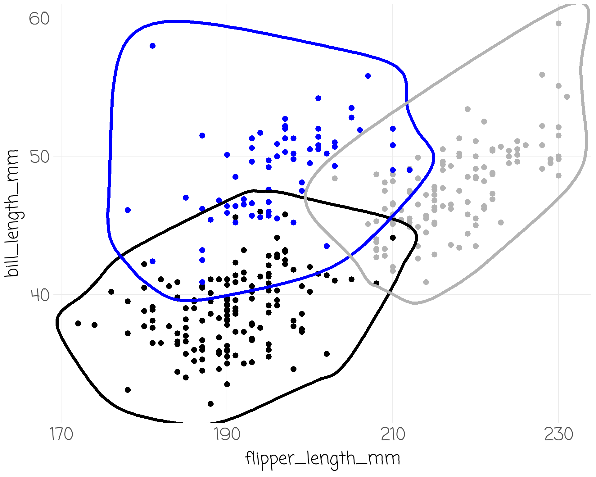
ggplot Runthrough
penguins %>% drop_na() %>%
ggplot() +
aes(x = flipper_len) +
scale_x_continuous(breaks = seq(170, 230, by = 20)) +
aes(y = bill_len) +
geom_point(size = 3, show.legend = F) +
aes(colour = species) +
scale_color_manual(values = c("black", "blue", "grey70")) +
ggalt::geom_encircle(size = 5, show.legend = FALSE) +
labs(title = "Chinstraps have Short Flippers",
subtitle = "{.black Adelie}, {.blue Chinstrap}, and {.#B0B0B0 Gentoo} penguins",
x = "Flipper Length (mm)",
y = "Bill Length (mm)",
caption = "@Data from Palmer Penguins")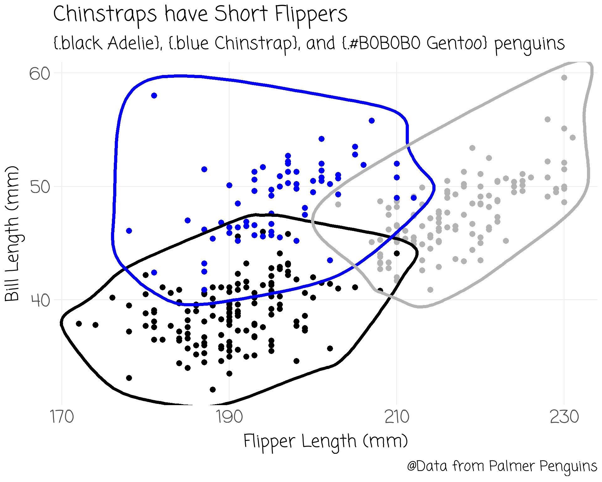
ggplot Runthrough
penguins %>% drop_na() %>%
ggplot() +
aes(x = flipper_len) +
scale_x_continuous(breaks = seq(170, 230, by = 20)) +
aes(y = bill_len) +
geom_point(size = 3, show.legend = F) +
aes(colour = species) +
scale_color_manual(values = c("black", "blue", "grey70")) +
ggalt::geom_encircle(size = 5, show.legend = FALSE) +
labs(title = "Chinstraps have Short Flippers",
subtitle = "{.black Adelie}, {.blue Chinstrap}, and {.#B0B0B0 Gentoo} penguins",
x = "Flipper Length (mm)",
y = "Bill Length (mm)",
caption = "@Data from Palmer Penguins") +
theme(text = element_text(family = "Ink Free", size = 32))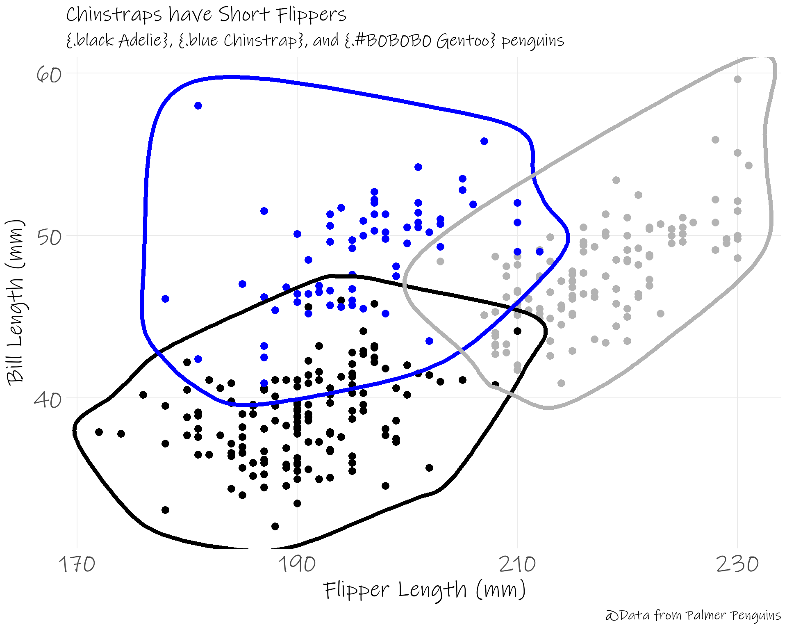
ggplot Runthrough
penguins %>% drop_na() %>%
ggplot() +
aes(x = flipper_len) +
scale_x_continuous(breaks = seq(170, 230, by = 20)) +
aes(y = bill_len) +
geom_point(size = 3, show.legend = F) +
aes(colour = species) +
scale_color_manual(values = c("black", "blue", "grey70")) +
ggalt::geom_encircle(size = 5, show.legend = FALSE) +
labs(title = "Chinstraps have Short Flippers",
subtitle = "{.black Adelie}, {.blue Chinstrap}, and {.#B0B0B0 Gentoo} penguins",
x = "Flipper Length (mm)",
y = "Bill Length (mm)",
caption = "@Data from Palmer Penguins") +
theme(text = element_text(family = "Ink Free", size = 32)) +
theme(plot.subtitle = element_marquee(width = 1))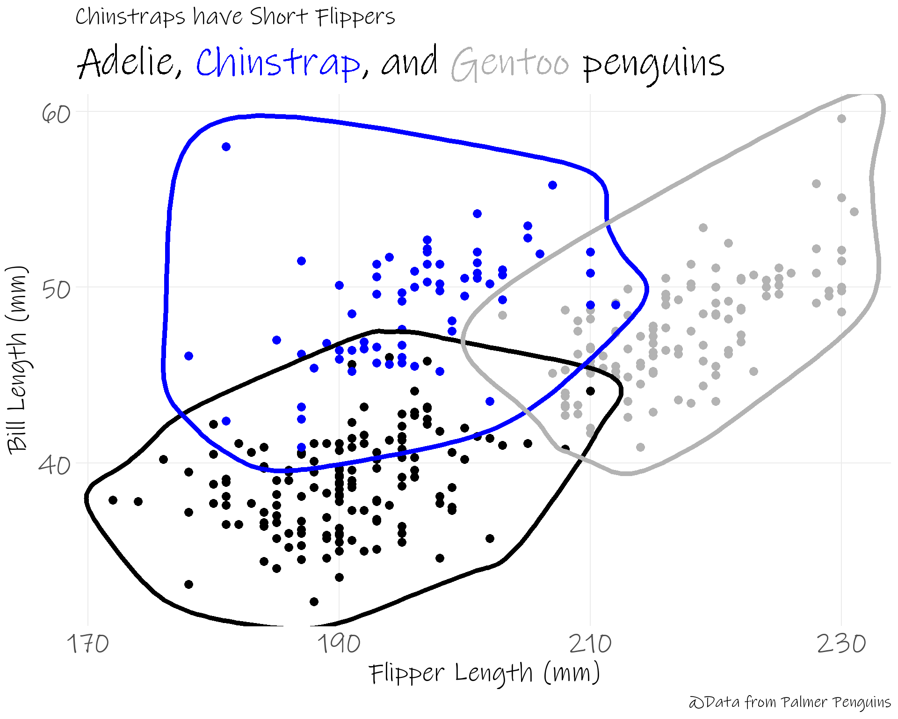
ggplot Runthrough
penguins %>% drop_na() %>%
ggplot() +
aes(x = flipper_len) +
scale_x_continuous(breaks = seq(170, 230, by = 20)) +
aes(y = bill_len) +
geom_point(size = 3, show.legend = F) +
aes(colour = species) +
scale_color_manual(values = c("black", "blue", "grey70")) +
ggalt::geom_encircle(size = 5, show.legend = FALSE) +
labs(title = "Chinstraps have Short Flippers",
subtitle = "{.black Adelie}, {.blue Chinstrap}, and {.#B0B0B0 Gentoo} penguins",
x = "Flipper Length (mm)",
y = "Bill Length (mm)",
caption = "@Data from Palmer Penguins") +
theme(text = element_text(family = "Ink Free", size = 32)) +
theme(plot.subtitle = element_marquee(width = 1)) +
facet_grid(~sex)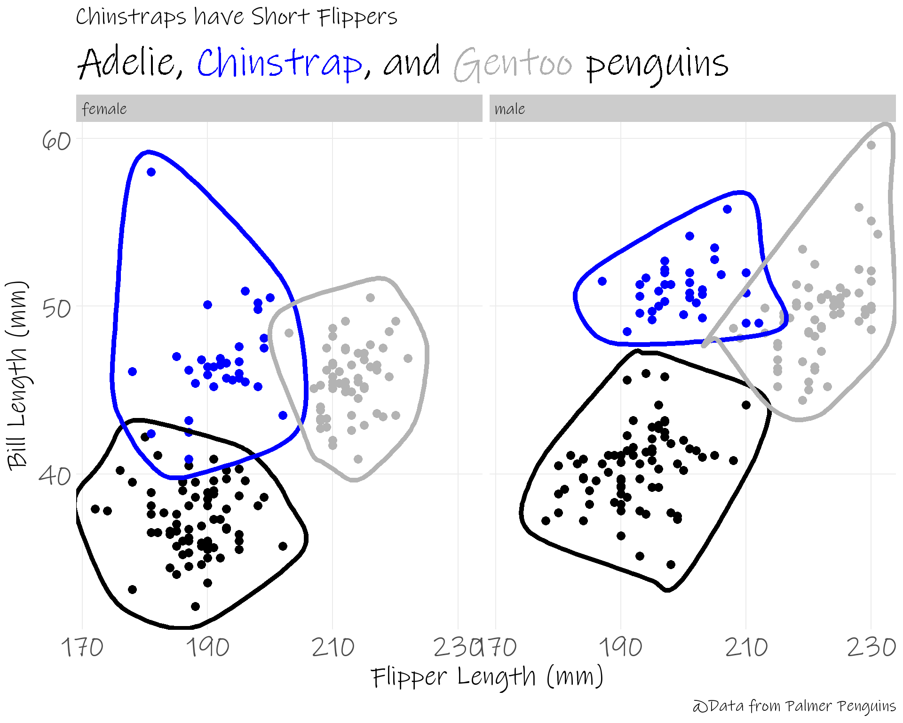
ggplot Runthrough
penguins %>% drop_na() %>%
ggplot() +
aes(x = flipper_len) +
scale_x_continuous(breaks = seq(170, 230, by = 20)) +
aes(y = bill_len) +
geom_point(size = 3, show.legend = F) +
aes(colour = species) +
scale_color_manual(values = c("black", "blue", "grey70")) +
ggalt::geom_encircle(size = 5, show.legend = FALSE) +
labs(title = "Chinstraps have Short Flippers",
subtitle = "{.black Adelie}, {.blue Chinstrap}, and {.#B0B0B0 Gentoo} penguins",
x = "Flipper Length (mm)",
y = "Bill Length (mm)",
caption = "@Data from Palmer Penguins") +
theme(text = element_text(family = "Ink Free", size = 32)) +
theme(plot.subtitle = element_marquee(width = 1)) +
facet_grid(~sex)
Graphics can be Fun
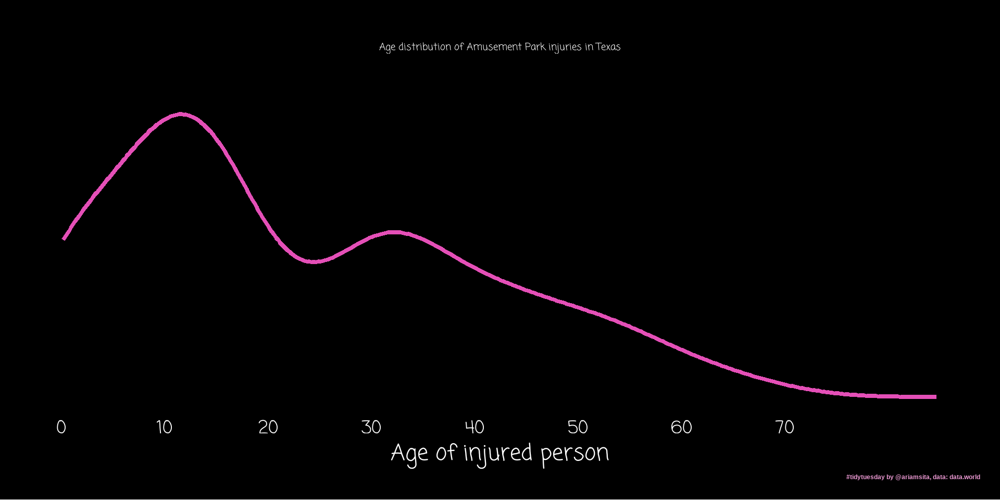
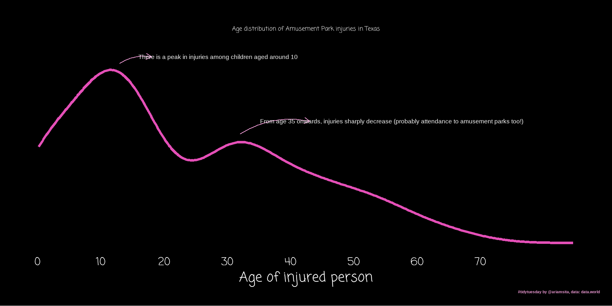
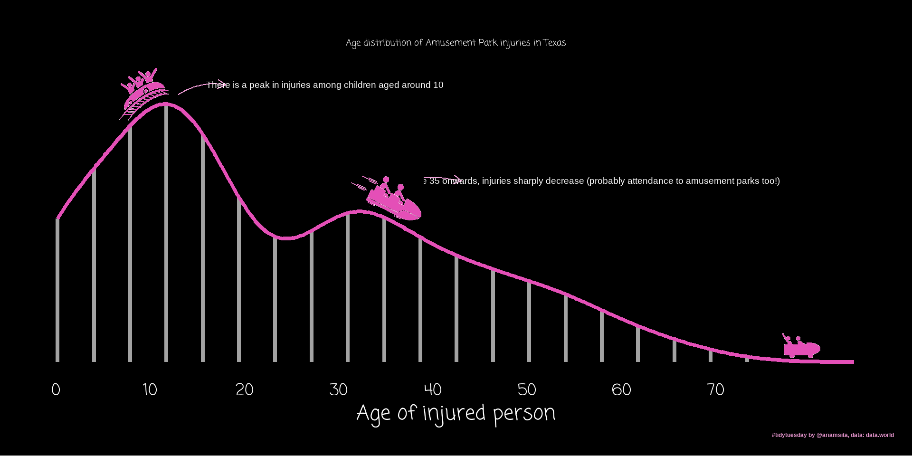
Picturing Data Different Ways with ggplot
We’re going to set out some of the options for looking at data
these depend on what kind of data you have
and what you want to investigate
Lots of these come from Top 50 Visualizations in R
Show the data
Use ink sparingly
Title should tell the story
Don’t try to show too much
Start with grey
Visualising Amounts
Visualising Proportions
Visualising Distributions
Visualising Relationships
Visualising Time Series
Visualising Groups
Visualising Networks
Visualising Spatial Data
Items in red we’ll cover this today. In blue will have to wait for a future workshop.
Visualising Amounts
barplot
dot plot
lollipop plot
Bar Plots
# A tibble: 53,940 × 10
carat cut color clarity depth table price x y z
<dbl> <ord> <ord> <ord> <dbl> <dbl> <int> <dbl> <dbl> <dbl>
1 0.23 Ideal E SI2 61.5 55 326 3.95 3.98 2.43
2 0.21 Premium E SI1 59.8 61 326 3.89 3.84 2.31
3 0.23 Good E VS1 56.9 65 327 4.05 4.07 2.31
4 0.29 Premium I VS2 62.4 58 334 4.2 4.23 2.63
5 0.31 Good J SI2 63.3 58 335 4.34 4.35 2.75
6 0.24 Very Good J VVS2 62.8 57 336 3.94 3.96 2.48
7 0.24 Very Good I VVS1 62.3 57 336 3.95 3.98 2.47
8 0.26 Very Good H SI1 61.9 55 337 4.07 4.11 2.53
9 0.22 Fair E VS2 65.1 61 337 3.87 3.78 2.49
10 0.23 Very Good H VS1 59.4 61 338 4 4.05 2.39
# ℹ 53,930 more rowsBar Plots
Bar Plots
Bar Plots
Bar Plots
Bar Plots
Bar Plots
Bar Plots
Bar Plots
Bar Plots

Bar Plots
diamonds %>%
ggplot(aes(cut)) +
geom_bar(fill = "dodgerblue1") +
ggtitle("Proportion of Cuts of Diamonds") +
labs(caption = "@Data tidyverse") +
coord_flip() +
theme_clean() +
theme(text = element_text(size = 40)) +
theme(axis.text.x = element_blank()) +
theme(axis.title = element_blank()) +
theme(title = element_text(face = "bold"))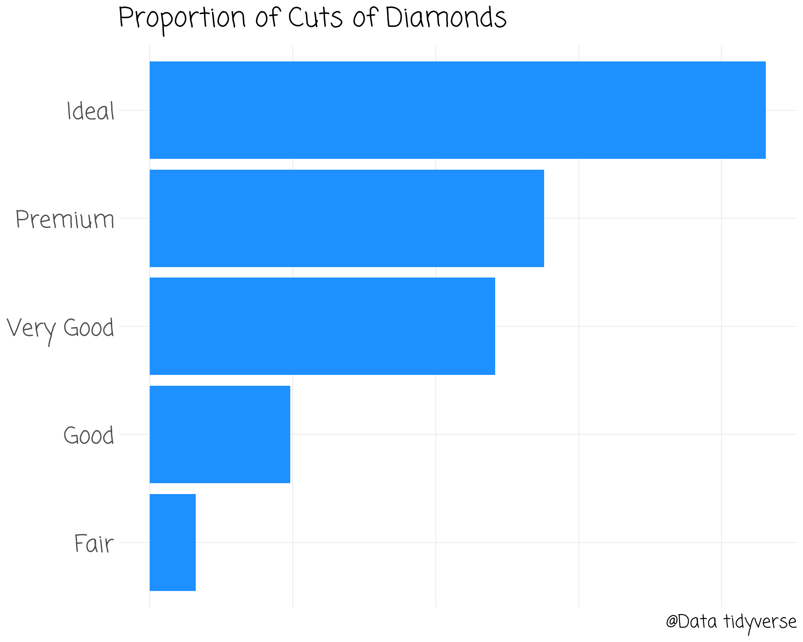
Movie Barplot
movie distributor gross percent_change theaters per_theater
1 Thn* Walt Disney 31.813091 NA 4330 7347
2 Snnr Warner Bros. 9.629511 93 3347 2877
3 AMnM Warner Bros. 2.975225 213 3571 833
4 ThA2 Amazon MGM S 2.633693 114 3610 730
5 UntD Sony Pictures 1.088897 107 3055 356
6 ThAm 20th Century 0.540505 109 2135 253
7 Wrfr A24 0.370830 NA 1315 282
8 TKoK Angel Studios 0.364069 46 2035 179
9 ThSr Roadside Att 0.323615 NA 884 366
10 TLoO A24 0.072455 NA 1004 72
11 Drop Universal 0.066050 15 470 141
12 CABN Walt Disney 0.064198 2196 105 611
13 DsSW Walt Disney 0.045451 103 310 147
14 Pr&P Focus Features 0.033895 -63 210 161
15 AWrM Amazon MGM S 0.029114 64 175 166
16 ThWB Bleecker Street 0.028570 10 83 344
17 TBoWI Focus Features 0.015605 14 86 181
18 OnSH Sony Picture 0.014670 -65 200 73
19 ThPL Sony Picture 0.013493 28 55 245
20 ThFr Bleecker Street 0.009847 26 67 147
21 CaCLM Keep Smokin 0.008655 -59 171 51
22 MgcF MUBI 0.003709 115 5 742
23 BoaS Uncia Films 0.001536 NA 1 1536
24 BTLI Roadside Att 0.001171 202 18 65
25 BcLZ Sony Picture 0.001047 -52 5 209
26 AMaaW Rialto Pictures 0.000967 -46 3 322
27 Sd&S Purdie Distr 0.000624 NA 6 104
total_gross days date movie_name
1 31813091 1 2025-05-02 Thunderbolts*
2 156358233 15 2025-05-02 Sinners
3 387484704 29 2025-05-02 A Minecraft Movie
4 34316615 8 2025-05-02 The Accountant 2
5 11647787 8 2025-05-02 Until Dawn
6 35680185 22 2025-05-02 The Amateur
7 23182132 22 2025-05-02 Warfare
8 56371496 22 2025-05-02 The King of Kings
9 323615 1 2025-05-02 The Surfer
10 1929956 15 2025-05-02 The Legend of Ochi
11 16280805 22 2025-05-02 Drop
12 200299979 78 2025-05-02 Captain America: Brave Ne
13 85932797 43 2025-05-02 Disneys Snow White
14 44579210 7113 2025-05-02 Pride & Prejudice
15 36837717 36 2025-05-02 A Working Man
16 1831111 15 2025-05-02 The Wedding Banquet
17 1526305 36 2025-05-02 The Ballad of Wallis Island
18 747096 8 2025-05-02 On Swift Horses
19 3035114 36 2025-05-02 The Penguin Lessons
20 3810375 36 2025-05-02 The Friend
21 706710 8 2025-05-02 Cheech and Chongs Last M
22 27913 8 2025-05-02 Magic Farm
23 1536 8 2025-05-02 Bears on a Ship
24 509271 43 2025-05-02 Bob Trevino Likes It
25 10363633 85 2025-05-02 Becoming Led Zeppelin
26 14056412 21308 2025-05-02 A Man and a Woman
27 53498 15 2025-05-02 Sod & StubbleMovie Barplot
movie distributor gross percent_change theaters per_theater
1 Thn* Walt Disney 31.813091 NA 4330 7347
2 Snnr Warner Bros. 9.629511 93 3347 2877
3 AMnM Warner Bros. 2.975225 213 3571 833
4 ThA2 Amazon MGM S 2.633693 114 3610 730
5 UntD Sony Pictures 1.088897 107 3055 356
6 ThAm 20th Century 0.540505 109 2135 253
7 Wrfr A24 0.370830 NA 1315 282
8 TKoK Angel Studios 0.364069 46 2035 179
9 ThSr Roadside Att 0.323615 NA 884 366
10 TLoO A24 0.072455 NA 1004 72
total_gross days date movie_name
1 31813091 1 2025-05-02 Thunderbolts*
2 156358233 15 2025-05-02 Sinners
3 387484704 29 2025-05-02 A Minecraft Movie
4 34316615 8 2025-05-02 The Accountant 2
5 11647787 8 2025-05-02 Until Dawn
6 35680185 22 2025-05-02 The Amateur
7 23182132 22 2025-05-02 Warfare
8 56371496 22 2025-05-02 The King of Kings
9 323615 1 2025-05-02 The Surfer
10 1929956 15 2025-05-02 The Legend of OchiMovie Barplot
Movie Barplot
Movie Barplot
Movie Barplot
Movie Barplot
movies %>% mutate(movie = fct_reorder(movie, gross)) %>%
slice_head(n=10) %>%
ggplot(aes(movie, gross)) +
geom_col(fill = "firebrick4") +
theme_clean() +
scale_y_continuous(breaks = scales::breaks_extended(8),
labels = scales::label_dollar(scale = 1)) +
labs(title = glue::glue("Box Office {boxoffice_date_string}"),
caption = "@Data from BoxOfficeMojo",
y = "Gross (Million$)")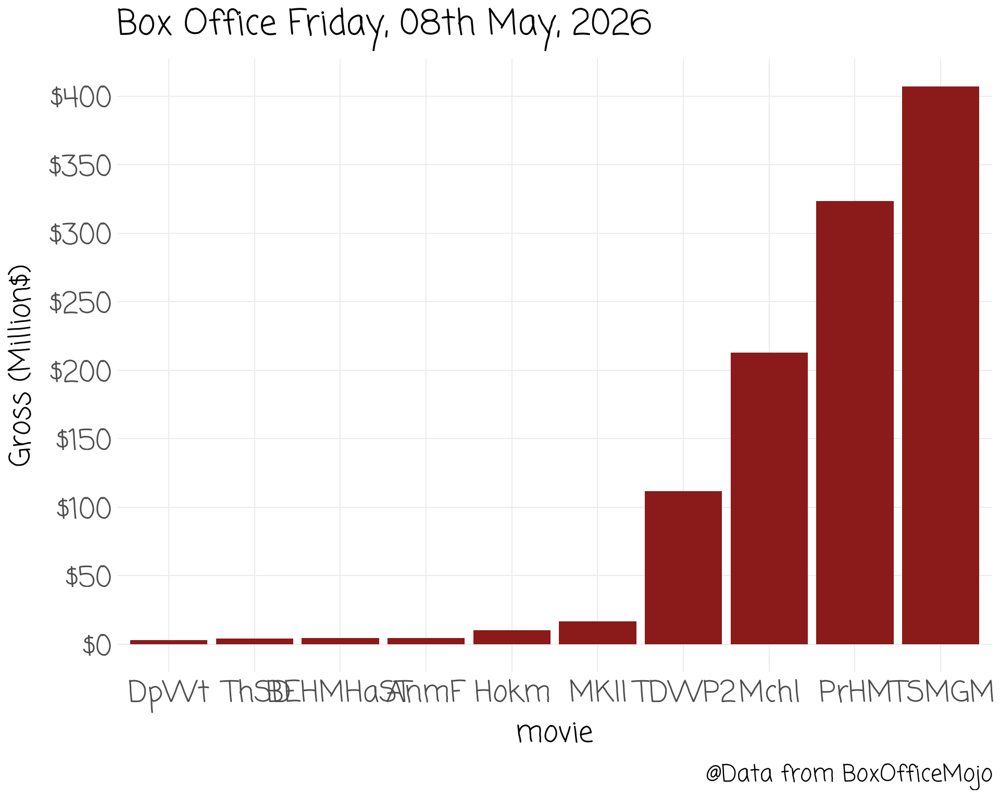
Movie Barplot
movies %>% mutate(movie = fct_reorder(movie, gross)) %>%
slice_head(n=10) %>%
ggplot(aes(movie, gross)) +
geom_col(fill = "firebrick4") +
theme_clean() +
scale_y_continuous(breaks = scales::breaks_extended(8),
labels = scales::label_dollar(scale = 1)) +
labs(title = glue::glue("Box Office {boxoffice_date_string}"),
caption = "@Data from BoxOfficeMojo",
y = "Gross (Million$)") +
coord_flip()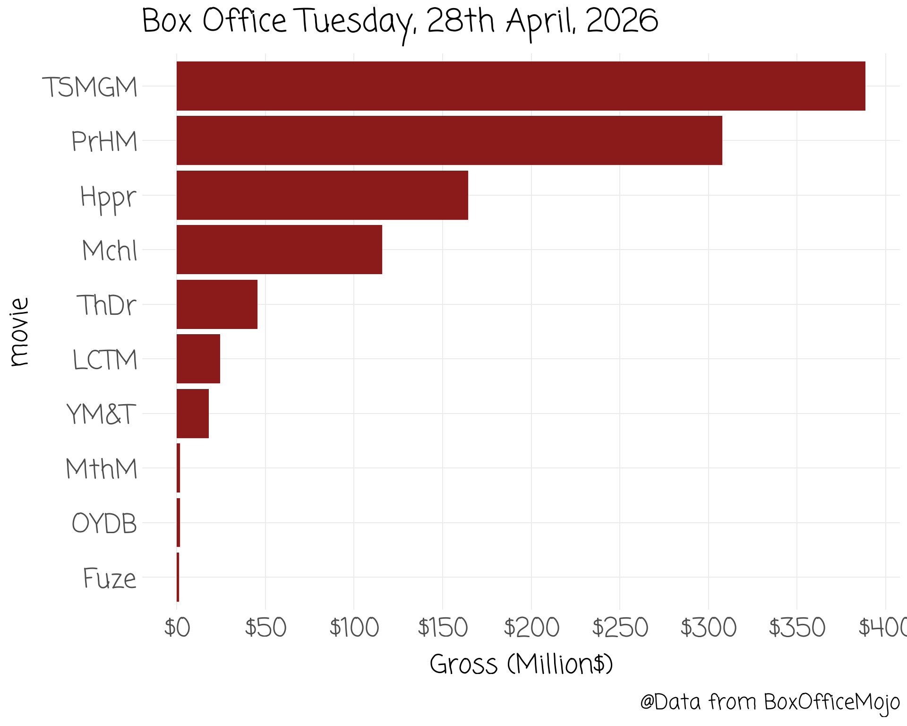
Movie Barplot
movies %>% mutate(movie = fct_reorder(movie, gross)) %>%
slice_head(n=10) %>%
ggplot(aes(movie, gross)) +
geom_col(fill = "firebrick4") +
theme_clean() +
scale_y_continuous(breaks = scales::breaks_extended(8),
labels = scales::label_dollar(scale = 1)) +
labs(title = glue::glue("Box Office {boxoffice_date_string}"),
caption = "@Data from BoxOfficeMojo",
y = "Gross (Million$)") +
coord_flip() +
theme(axis.title.y = element_blank())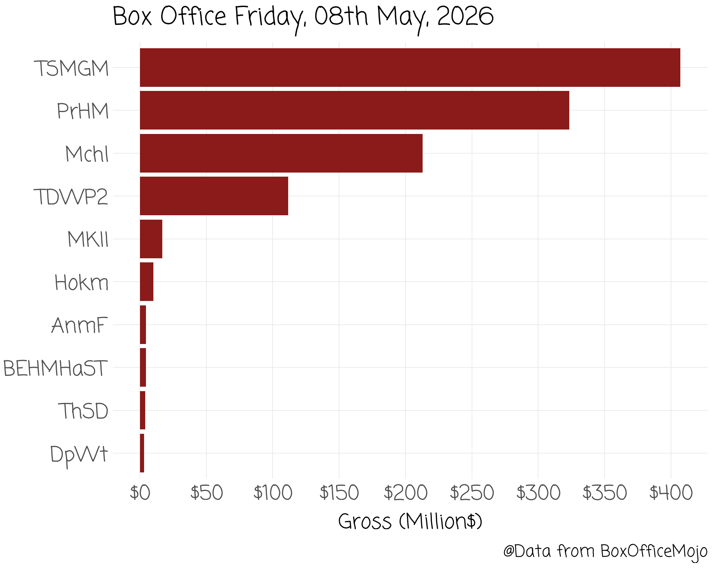
| Movie Title | Abbreviated Title |
|---|---|
| Thunderbolts* | Thn* |
| Sinners | Snnr |
| A Minecraft Movie | AMnM |
| The Accountant 2 | ThA2 |
| Until Dawn | UntD |
| The Amateur | ThAm |
| Warfare | Wrfr |
| The King of Kings | TKoK |
| The Surfer | ThSr |
| The Legend of Ochi | TLoO |
Column Plot
penguins %>%
group_by(species) %>%
summarise(body_mass = mean(body_mass, na.rm = T)) %>%
ggplot(aes(species, body_mass, xend = species, yend = body_mass)) +
theme_clean() +
coord_flip() +
labs(caption = "@PalmerPenguins",
y = "Body Mass (g)",
x = "") +
ylim(c(0, 6000)) +
geom_col(fill = "firebrick4") +
labs(x = "")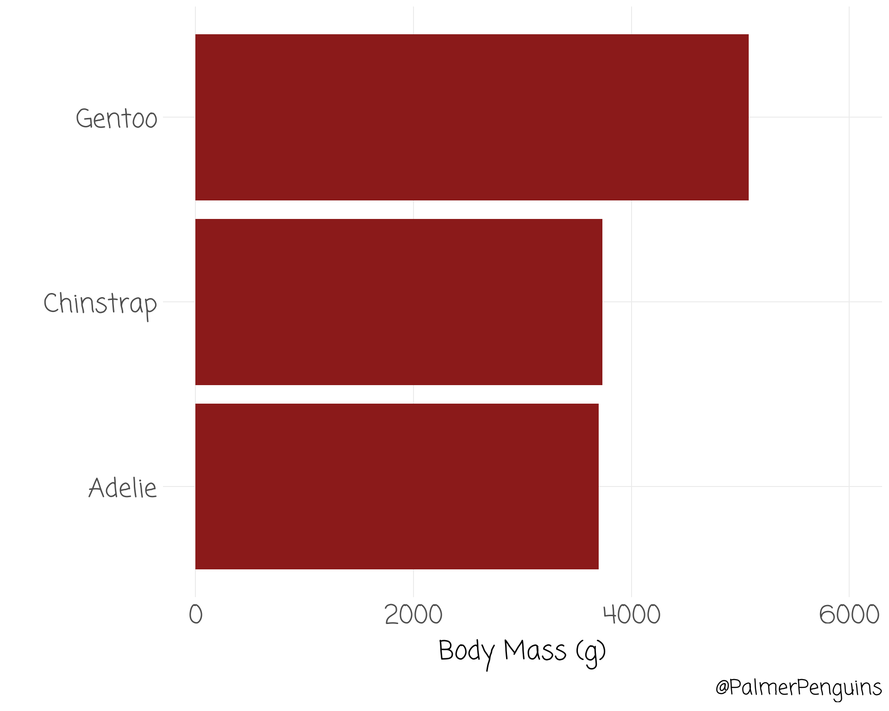
Column Plot
penguins %>%
group_by(species) %>%
summarise(body_mass = mean(body_mass, na.rm = T)) %>%
ggplot(aes(species, body_mass, xend = species, yend = body_mass)) +
theme_clean() +
coord_flip() +
labs(caption = "@PalmerPenguins",
y = "Body Mass (g)",
x = "") +
ylim(c(0, 6000)) +
geom_point(colour = "firebrick4", size = 4) +
labs(x = "")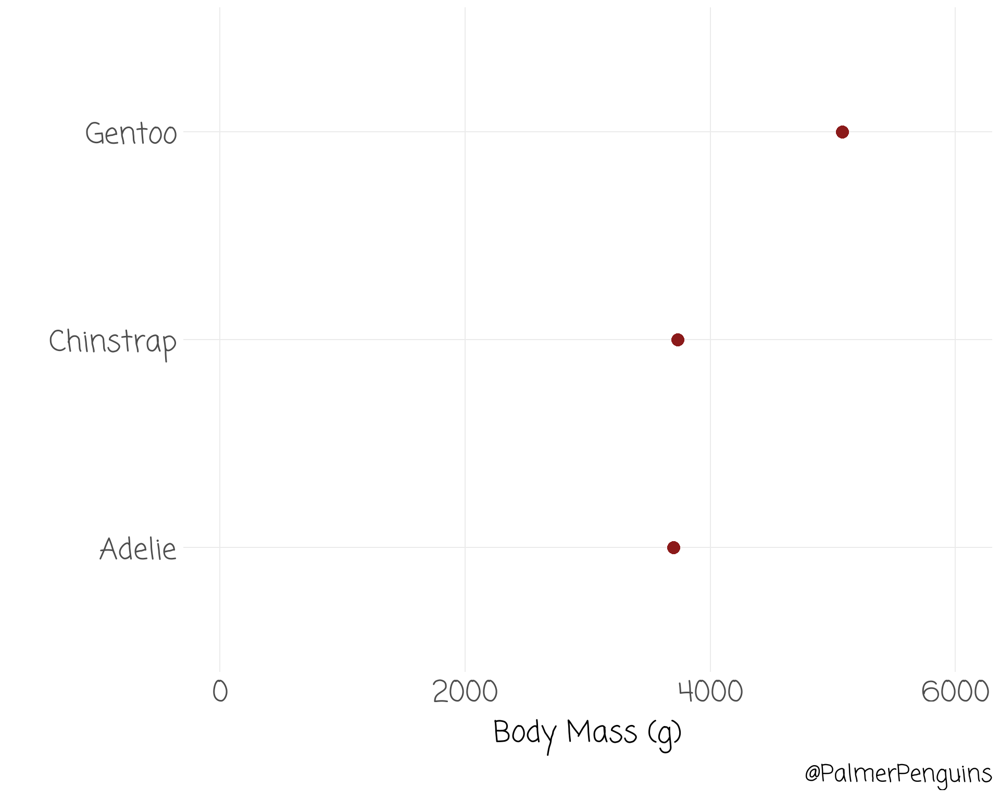
Column Plot
penguins %>%
group_by(species) %>%
summarise(body_mass = mean(body_mass, na.rm = T)) %>%
ggplot(aes(species, body_mass, xend = species, yend = body_mass)) +
theme_clean() +
coord_flip() +
labs(caption = "@PalmerPenguins",
y = "Body Mass (g)",
x = "") +
ylim(c(0, 6000)) +
geom_segment(linewidth = 2, colour = "firebrick4", y = 0) + geom_point(colour = "firebrick4", size = 4) +
labs(x = "")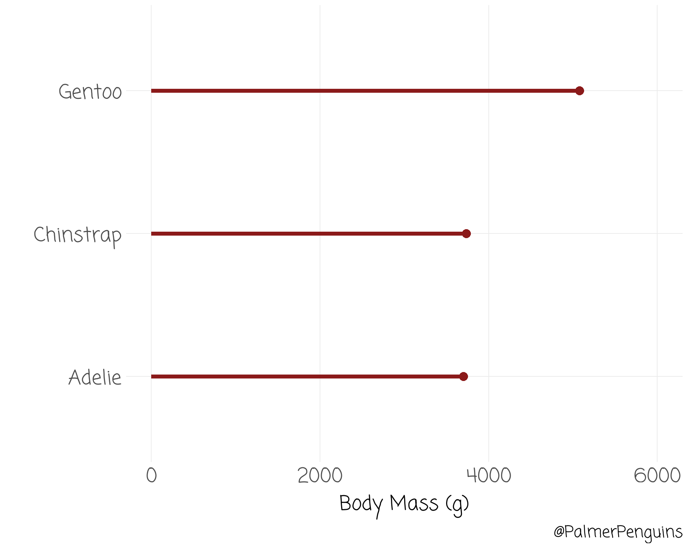
Visualising Distributions
histograms
density plots
boxplot
violin plot
ridge plots
Histogram
# A tibble: 3,366 × 8
name year_start year_end position height weight birth_date college
<chr> <dbl> <dbl> <chr> <dbl> <dbl> <chr> <chr>
1 Kareem Abdul-J… 1970 1989 C 218. 102. April 16,… Univer…
2 Mahmoud Abdul-… 1991 2001 G 185. 73.5 March 9, … Louisi…
3 Tariq Abdul-Wa… 1998 2003 F 198. 101. November … San Jo…
4 Shareef Abdur-… 1997 2008 F 206. 102. December … Univer…
5 Tom Abernethy 1977 1981 F 201. 99.8 May 6, 19… Indian…
6 Forest Able 1957 1957 G 190. 81.6 July 27, … Wester…
7 John Abramovic 1947 1948 F 190. 88.5 February … Salem …
8 Alex Acker 2006 2009 G 196. 83.9 January 2… Pepper…
9 Don Ackerman 1954 1954 G 183. 83.0 September… Long I…
10 Bud Acton 1968 1968 F 198. 95.3 January 1… Hillsd…
# ℹ 3,356 more rowsHistogram

Histogram
Histogram
Histogram
# A tibble: 3,366 × 8
name year_start year_end position height weight birth_date college
<chr> <dbl> <dbl> <chr> <dbl> <dbl> <chr> <chr>
1 Kareem Abdul-J… 1970 1989 C 218. 102. April 16,… Univer…
2 Mahmoud Abdul-… 1991 2001 G 185. 73.5 March 9, … Louisi…
3 Tariq Abdul-Wa… 1998 2003 F 198. 101. November … San Jo…
4 Shareef Abdur-… 1997 2008 F 206. 102. December … Univer…
5 Tom Abernethy 1977 1981 F 201. 99.8 May 6, 19… Indian…
6 Forest Able 1957 1957 G 190. 81.6 July 27, … Wester…
7 John Abramovic 1947 1948 F 190. 88.5 February … Salem …
8 Alex Acker 2006 2009 G 196. 83.9 January 2… Pepper…
9 Don Ackerman 1954 1954 G 183. 83.0 September… Long I…
10 Bud Acton 1968 1968 F 198. 95.3 January 1… Hillsd…
# ℹ 3,356 more rowsHistogram

Histogram
Histogram
Density Plot
# A tibble: 3,366 × 8
name year_start year_end position height weight birth_date college
<chr> <dbl> <dbl> <chr> <dbl> <dbl> <chr> <chr>
1 Kareem Abdul-J… 1970 1989 C 218. 102. April 16,… Univer…
2 Mahmoud Abdul-… 1991 2001 G 185. 73.5 March 9, … Louisi…
3 Tariq Abdul-Wa… 1998 2003 F 198. 101. November … San Jo…
4 Shareef Abdur-… 1997 2008 F 206. 102. December … Univer…
5 Tom Abernethy 1977 1981 F 201. 99.8 May 6, 19… Indian…
6 Forest Able 1957 1957 G 190. 81.6 July 27, … Wester…
7 John Abramovic 1947 1948 F 190. 88.5 February … Salem …
8 Alex Acker 2006 2009 G 196. 83.9 January 2… Pepper…
9 Don Ackerman 1954 1954 G 183. 83.0 September… Long I…
10 Bud Acton 1968 1968 F 198. 95.3 January 1… Hillsd…
# ℹ 3,356 more rowsDensity Plot
Density Plot
Density Plot
Density Plot
Boxplot
# A tibble: 3,366 × 8
name year_start year_end position height weight birth_date college
<chr> <dbl> <dbl> <chr> <dbl> <dbl> <chr> <chr>
1 Kareem Abdul-J… 1970 1989 C 218. 102. April 16,… Univer…
2 Mahmoud Abdul-… 1991 2001 G 185. 73.5 March 9, … Louisi…
3 Tariq Abdul-Wa… 1998 2003 F 198. 101. November … San Jo…
4 Shareef Abdur-… 1997 2008 F 206. 102. December … Univer…
5 Tom Abernethy 1977 1981 F 201. 99.8 May 6, 19… Indian…
6 Forest Able 1957 1957 G 190. 81.6 July 27, … Wester…
7 John Abramovic 1947 1948 F 190. 88.5 February … Salem …
8 Alex Acker 2006 2009 G 196. 83.9 January 2… Pepper…
9 Don Ackerman 1954 1954 G 183. 83.0 September… Long I…
10 Bud Acton 1968 1968 F 198. 95.3 January 1… Hillsd…
# ℹ 3,356 more rowsBoxplot
Boxplot
Boxplot
Boxplot
Violin Plot
# A tibble: 3,366 × 8
name year_start year_end position height weight birth_date college
<chr> <dbl> <dbl> <chr> <dbl> <dbl> <chr> <chr>
1 Kareem Abdul-J… 1970 1989 C 218. 102. April 16,… Univer…
2 Mahmoud Abdul-… 1991 2001 G 185. 73.5 March 9, … Louisi…
3 Tariq Abdul-Wa… 1998 2003 F 198. 101. November … San Jo…
4 Shareef Abdur-… 1997 2008 F 206. 102. December … Univer…
5 Tom Abernethy 1977 1981 F 201. 99.8 May 6, 19… Indian…
6 Forest Able 1957 1957 G 190. 81.6 July 27, … Wester…
7 John Abramovic 1947 1948 F 190. 88.5 February … Salem …
8 Alex Acker 2006 2009 G 196. 83.9 January 2… Pepper…
9 Don Ackerman 1954 1954 G 183. 83.0 September… Long I…
10 Bud Acton 1968 1968 F 198. 95.3 January 1… Hillsd…
# ℹ 3,356 more rowsViolin Plot

Violin Plot
Violin Plot
Violin Plot
Ridge Plot
# A tibble: 1,704 × 6
country continent year lifeExp pop gdpPercap
<fct> <fct> <int> <dbl> <int> <dbl>
1 Afghanistan Asia 1952 28.8 8425333 779.
2 Afghanistan Asia 1957 30.3 9240934 821.
3 Afghanistan Asia 1962 32.0 10267083 853.
4 Afghanistan Asia 1967 34.0 11537966 836.
5 Afghanistan Asia 1972 36.1 13079460 740.
6 Afghanistan Asia 1977 38.4 14880372 786.
7 Afghanistan Asia 1982 39.9 12881816 978.
8 Afghanistan Asia 1987 40.8 13867957 852.
9 Afghanistan Asia 1992 41.7 16317921 649.
10 Afghanistan Asia 1997 41.8 22227415 635.
# ℹ 1,694 more rowsRidge Plot
Ridge Plot
Ridge Plot
Ridge Plot
Summary of Distributions
hugely important
great way to explore your data / introduce it to others
make sure you show you data when possible
- use geom_rug()
- use geom_jitter()
- if lots of points, then use alpha to mute them
Visualising Relationships
scatter plots
- encircling
- jittering
- using colour / size / shape
- fitting lines
- histograms and boxplots on the axes (and geom_rug())
line plots
correlation
Encircle
star magnitude temp type
1 Sun 4.8 5840 G
2 SiriusA 1.4 9620 A
3 Canopus -3.1 7400 F
4 Arcturus -0.4 4590 K
5 AlphaCentauriA 4.3 5840 G
6 Vega 0.5 9900 A
7 Capella -0.6 5150 G
8 Rigel -7.2 12140 B
9 ProcyonA 2.6 6580 F
10 Betelgeuse -5.7 3200 M
11 Achemar -2.4 20500 B
12 Hadar -5.3 25500 B
13 Altair 2.2 8060 A
14 Aldebaran -0.8 4130 K
15 Spica -3.4 25500 B
16 Antares -5.2 3340 M
17 Fomalhaut 2.0 9060 A
18 Pollux 1.0 4900 K
19 Deneb -7.2 9340 A
20 BetaCrucis -4.7 28000 B
21 Regulus -0.8 13260 B
22 Acrux -4.0 28000 B
23 Adhara -5.2 23000 B
24 Shaula -3.4 25500 B
25 Bellatrix -4.3 23000 B
26 Castor 1.2 9620 A
27 Gacrux -0.5 3750 M
28 BetaCentauri -5.1 25500 B
29 AlphaCentauriB 5.8 4730 K
30 AlNa'ir -1.1 15550 B
31 Miaplacidus -0.6 9300 A
32 Elnath -1.6 12400 B
33 Alnilam -6.2 26950 B
34 Mirfak -4.6 7700 F
35 Alnitak -5.9 33600 O
36 Dubhe 0.2 4900 K
37 Alioth 0.4 9900 A
38 Peacock -2.3 20500 B
39 KausAustralis -0.3 11000 B
40 ThetaScorpii -5.6 7400 F
41 Atria -0.1 4590 K
42 Alkaid -1.7 20500 B
43 AlphaCrucisB -3.3 20500 B
44 Avior -2.1 4900 K
45 DeltaCanisMajoris -8.0 6100 F
46 Alhena 0.0 9900 A
47 Menkalinan 0.6 9340 A
48 Polaris -4.6 6100 F
49 Mirzam -4.8 25500 B
50 DeltaVulpeculae 0.6 9900 A
51 *ProximaCentauri 15.5 2670 M
52 *AlphaCentauriB 5.8 4900 K
53 Barnard'sStar 13.2 2800 M
54 Wolf359 16.7 2670 M
55 HD93735 10.5 3200 M
56 *L726-8 15.5 2670 M
57 *UVCeti 16.0 2670 M
58 *SiriusA 1.4 9620 A
59 *SiriusB 11.2 14800 DA
60 Ross154 13.1 2800 M
61 Ross248 14.8 2670 M
62 EpsilonEridani 6.1 4590 K
63 Ross128 13.5 2800 M
64 L789-6 14.5 2670 M
65 *GXAndromedae 10.4 3340 M
66 *GQAndromedae 13.4 2670 M
67 EpsilonIndi 7.0 4130 K
68 *61CygniA 7.6 4130 K
69 *61CygniB 8.4 3870 K
70 *Struve2398A 11.2 3070 M
71 *Struve2398B 11.9 2940 M
72 TauCeti 5.7 5150 G
73 *ProcyonA 2.6 6600 F
74 *ProcyonB 13.0 9700 DF
75 Lacaille9352 9.6 3340 M
76 G51-I5 17.0 2500 M
77 YZCeti 14.1 2670 M
78 BD+051668 11.9 2800 M
79 Lacaille8760 8.7 3340 K
80 KapteynsStar 10.9 3480 M
81 *Kruger60A 11.9 2940 M
82 *Kruger60B 13.3 2670 M
83 BD-124523 12.1 2940 M
84 Ross614A 13.1 2800 M
85 Wolf424A 15.0 2670 M
86 vanMaanen'sStar 14.2 13000 DB
87 TZArietis 14.0 2800 M
88 HD225213 10.3 3200 M
89 Altair 2.2 8060 A
90 ADLeonis 11.0 2940 M
91 *40EridaniA 6.0 4900 K
92 *40EridaniB 11.1 10000 DA
93 *40EridaniC 12.8 2940 M
94 *70OphiuchiA 5.8 4950 K
95 *70OphiuchiB 7.5 3870 K
96 EVLacertae 11.7 2800 MEncircle
Encircle
Encircle
Encircle
Encircle
dslabs::stars %>%
ggplot(aes(temp,
magnitude,
col = type)) +
geom_point(show.legend = F) +
geom_encircle(data = dslabs::stars %>%
dplyr::filter(type == "B" | (type == "M" & magnitude > 9)),
show.legend = F) +
scale_x_log10() +
annotate("text",
x = c(15000, 5000),
y = c(-4, 14),
label = c("Type B Stars", "Faint Type M Stars"),
col = c("blue", "olivedrab3"),
family = "Ink Free",
size = 4,
fontface = 2)Encircle
dslabs::stars %>%
ggplot(aes(temp,
magnitude,
col = type)) +
geom_point(show.legend = F) +
geom_encircle(data = dslabs::stars %>%
dplyr::filter(type == "B" | (type == "M" & magnitude > 9)),
show.legend = F) +
scale_x_log10() +
annotate("text",
x = c(15000, 5000),
y = c(-4, 14),
label = c("Type B Stars", "Faint Type M Stars"),
col = c("blue", "olivedrab3"),
family = "Ink Free",
size = 4,
fontface = 2) +
scale_color_viridis_d()Choice of Colours in R
colours are very important
- second only to position for perception
can carry information
also important to be visually pleasing
worthwhile to make your figures aesthetically attractive
- visualisations that are engaging are more effective
Types of Colour Scales
qualitative
- suite of colours that are easily distinguished
- no heirarchy
- caters for visual impairments
sequential
- band of colours that are increasingly intense
- go from low to high
diverging
- suite of colours that go from minus to plus
- contrasting colours at each end
- something bland and neutral in the middle
Getting Colours in R
some really great packages
RColorBrewer()- excellent package giving fine control over palette choice
viridis()- excels at palettes for vision-impaired readers
paletteer()- collection of palettes from various sources
wesanderson- names(wes_palettes) followed by wes_palette(“BottleRocket1”)
more….
tvthemes()- not just colours, but layouts and fonts
- everything from Game of Thrones to Spongebob (yes, really)
ggsci(), palettes for scientific publications (Lancet, AAAS, etc)colorspace()- resources for picking colours
- choose_color() and choose_palette()
- can convert colours based on vision deficiencies
- will convert from colour descriptions, e.g. hex2RGB()
and a cheatsheet
Ways of Describing Colours
by name: “red”, “cyan”, “violetred4”, “thistle”…..
- get full list of 657 available in R from colors()
by hex code: “#f49340”, “#40f9f9”, “#ee82ef”, “#d8bfd1”….
by rgb values: (249, 67, 64), (64, 249, 249), (57, 14, 30), (216, 191, 209)….
by hcl values: (53.24, 179.04, 12.17), (91.11, 72.10, 192.17), (32.36, 63.11, 349.86), (80.08, 20.79, 307.73)….
Investigating Colours in R
- the following code shows the first “N” colours in R where N is set to 20 here:
Other Usful Functions
show_col() from the scales package is super useful
- e.g. show_col(“red”) or show_col(“#84a412”)
rgb() will give a hex code for a fraction of red, green, blue
- e.g. rgb(0.4, 0.2, 0.5) gives “#663380”
colourPicker() from the colourpicker package
- colourPicker(numCols = 4), opens up shiny app, returns colours
col2rgb(), also col2hex() from the gplots package, and col2hcl from the jmw86069/jamba package
- this last is on github, so you must install the package devtools then do install_github( jmw86069/jamba)
Some Websites and Tools
-
- will generate appropriate palettes
Chrome has an Eye Dropper tool
- click on part of a webpage and it will tell you the colour
Nice description of colurs from Stowers
Colours in ggplot()
use for fill and for col aesthetics
add the scale_fill… and scale_color… layers to control
explore these by typing ?scale_fill and then TAB to see the range of options
Using Themes in R
We’ll also discuss fonts (first).
themes give fine control to the appearance of your plots
- control over text size, fonts, text colour, etc
- position of legends, titles, captions, etc
- colours of backgrounds
- delete unwanted features (like, say, tick marks on an axis)
large number of preset themes
several packages with neat bundle of useful themes
and, of course, we can develop our own theme to have consistent graphics
Fonts
we’ll discuss this first, as often themes require fonts which might not be present
fonts are a whole world of their own
need to be in the system, load them into windows / mac / linux
- only really works for true type fonts (.ttf)
- go to folder where the R library lives and seek out fonts
- e.g. R/x86_64-pc/3.6/tvthemes/fonts/SpongeBob
- click on .ttf files to install
then need to capture them in R
- install package extrafont
- run ttf_import() with path = folder from above
- run fonts() to check available fonts
- usually need to restart R (Session then Restart R)
showtextpackage also usefulfont_add(family = "Get Schwifty", regular = "fonts/get_schwifty.ttf")showtext_auto()
can also use google fonts (
showtext::font_add_google("my_special_font"))
Complete Themes
these set up ggplots with standard appearances
can always adjust these, but do so in a layer after invoking the theme
some defaults in ggplot2, see here
you should experiment with these to see how they look
Complete Themes
other package provide supplementary themes
This website is pretty good on themes
again, make sure you experiment with these
Fine Control Over Themes
- we can change any feature of a theme that we want
- type ?theme on the console to see available themes
- use element_&&&&& to replace theme
- example: theme(text = element_text(family = “Roboto Sans”))
Workshop Week 5:
you have a dataset with the counties of Ireland in one column and their populations in a second column. To produce a bar chart, should you use geom_col() or geom_bar()?
make a bar chart of the number of counties in each of the five US midwest states. Use the midwest dataset from ggplot2
make a bar chart of the number of each species of pengiun from the penguins dataset
make a bar chart of the 12 Carnivora total sleep times from the msleep dataset in ggplot2
make a lollipop plot of the 12 Primates total sleep times from the msleep dataset in ggplot2
install the boxoffice package from github (
devtools::install_github("jacobkap/boxoffice"). Use the following commands to downloads box office receipts from this day last week:
boxoffice_date <- Sys.Date()-7
movies <- boxoffice(boxoffice_date) %>%
mutate(gross = gross / 1e3,
movie_name = movie,
movie = abbreviate(movie)) %>%
head()Plot a pie chart of gross receipt for these top six films (see the R Graph Gallery)
Assignment - Week Five
You are tasked with reproducing the following figure:
Procedure
You’ll need the tidyverse library and the dslabs library (install from CRAN by install.packages(“dslabs”))
Get the dataset using data(“death_prob”)
You’ll need to call ggplot setting data = death_prob
There are three aesthetics; for age, prob, and sex
Add the graph title, the axes labels, and add a caption
The y axis should be plotted on a log scale
There are also extra marks for improving the figure with your own ideas
You can save your plot using ggsave(“my-first-assignment.png”) at the console or in your .R file, or by clicking Export in the plots pane of RStudio
Marking
Correct call to ggplot to set up the figure framework (2 marks)
Correct geom to insert the points (2 marks)
Inserting the title, axes labels, and caption (2 marks)
Making the y-axis on a log scale using scale_y_log10 (2 marks)
Your improvement (2 marks)
Upload your work (the image and your code) to moodle at Week Five Assignment - death_prob. The deadline is midnight on Saturday 17th May 2025.